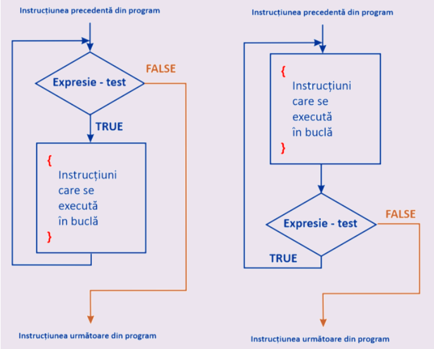

Ciclu cu condiție
Instrucțiunile repetitive, execuția căror este dirijată de o condiție se numesc cicluri cu condiție.
Sunt cunoscute 2 cicluri cu condiție: ciclu cu precondiție (While) și ciclu cu postcondiție (Do-While).
Execuția acestor cicluri este realizată numai și numai atunci când condiția are valoare true.
Diferența dintre While și Do-While constă în momentul verificării condiției pentru execuția acestora. În cazul ciclului While mai întâi se verifică condiția și dacă aceasta este satisfăcută se execută corpul ciclului, după ce iarăși se revine la verificarea condiției. În cazul ciclului Do-While mai întâi se execută corpul ciclului și apoi se verifică condiția. Dacă condiția este true corpul ciclului încă o dată se execută s.a.m.d.
Ambele cicluri încetează execuția cand condiția devine falsă. Însă este important un moment: În cazul ciclului While dacă condiția din start este falsă ciclul nu se va execută niciodată (0 ori). Pe când ciclul Do-While datorind faptului că condiția se verifică după corpul ciclului se va executa minimum o singură dată în cazul condiției false.
O lectie video despre aceste 2 cicluri puteți viziona Aici.

Diferența dintre While și Do-While constă în momentul verificării condiției pentru execuția acestora. În cazul ciclului While mai întâi se verifică condiția și dacă aceasta este satisfăcută se execută corpul ciclului, după ce iarăși se revine la verificarea condiției. În cazul ciclului Do-While mai întâi se execută corpul ciclului și apoi se verifică condiția. Dacă condiția este true corpul ciclului încă o dată se execută s.a.m.d.
Ambele cicluri încetează execuția cand condiția devine falsă. Însă este important un moment: În cazul ciclului While dacă condiția din start este falsă ciclul nu se va execută niciodată (0 ori). Pe când ciclul Do-While datorind faptului că condiția se verifică după corpul ciclului se va executa minimum o singură dată în cazul condiției false.
O lectie video despre aceste 2 cicluri puteți viziona Aici.
Sintaxa While:
while(conditie) {//corpul ciclului}Sintaxa DO-While:
do {//corpul ciclului} while(conditie);Exemplu:
- i=5; while (i>=1) {cout<<i<<' ';i--;}
- Variabila i primește valoarea 5.
- La inceputul se verifică condiția 5>=1, este adevărată, deaceea se trece la execuția corpului ciclului.
- În corpul ciclului se afișează valoarea curentă a lui i, adică 5, după ce valoarea lui i este decrementată (micșorată cu 1), adică se obține 4.
- Se revine la condiția 4>=1, adevărată, din nou se execută ciclul.
- Ciclul se va finisa în momentul când valoarea lui i va deveni 0, condiția 0>=1 va deveni falsă și corpul nu se va executa.
- Efectul acestui ciclu este afișarea pe ecran a valorilor de la 5 până la 1, adică a 5 valori consecutive în descreștere.
- i=5; do {cout<<i<<' ';i--;} while (i>=1);
- Variabila i primește valoarea 5.
- În corpul ciclului se afișează valoarea curentă a lui i, adică 5, după ce valoarea lui i este decrementată (micșorată cu 1), adică se obține 4.
- Se verifică condiția 4>=1, este adevărată, deaceea se revine la execuția corpului ciclului.
- Ciclul se va finisa în momentul când valoarea lui i va deveni 0, condiția 0>=1 va deveni falsă și corpul nu se va executa.
Pentru exemplificare propunem o problemă: Se citește de la tastatură un număr N. Se cere afișarea tablei de înmulțire la N.
- #include <iostream>
- using namespace std;
- int main()
- {
- int n,m=1;
- cout<<"Dati numarul n:"<<endl;
- cin>>n;
- while (m<=10){
- cout<<n<<"*"<<m<<"="<<(m*n)<<endl;
- m++;}
- return 0;
- }
Rezultatul execuției acestui program va fi:
Dati numarul n:
4
4*1=4
4*2=8
4*3=12
4*4=16
4*5=20
4*6=24
4*7=28
4*8=32
4*9=36
4*10=40
Sarcina:
Elaborați un program ce va realiza: Citiți de la tastatură un șir de numere întregi.
Afișați pe ecran suma acestor numere. Introducerea valorilor se finisează cu tastarea valorii 0.
Pentru realizarea sarcinii puteți utiliza zona de mai jos a editorului.
Mai multe probleme puteți găsi în
Problemar pag.35-44.
Pentru realizarea sarcinii puteți utiliza zona de mai jos a editorului.